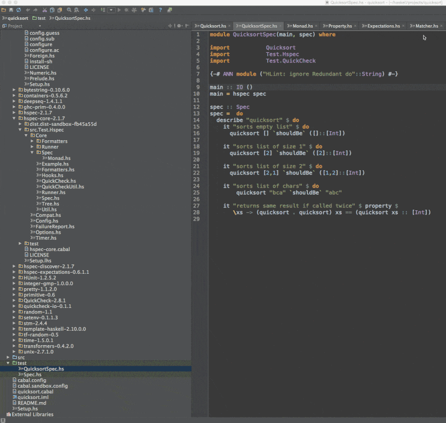
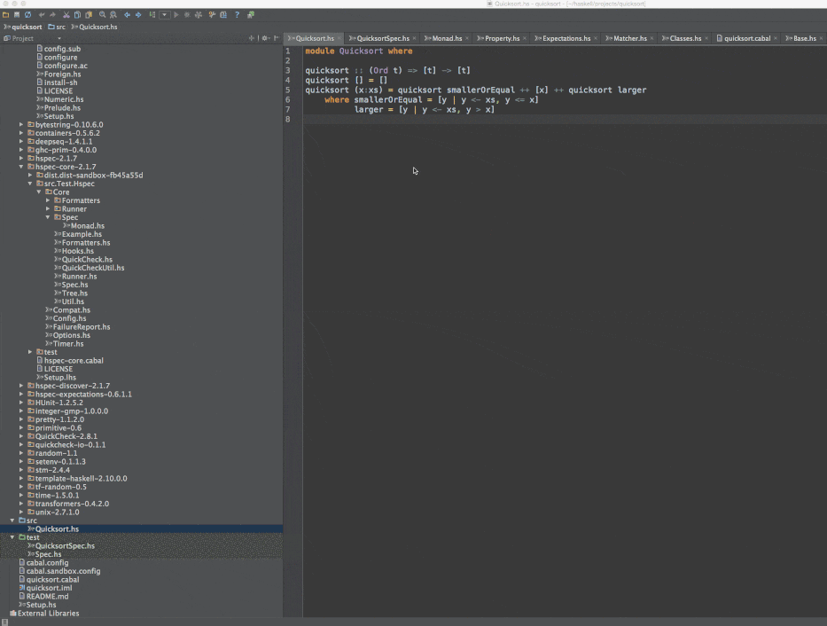

IntelliJ Haskell
IntelliJ plugin for Haskell
View project on
GitHub
Key features
Navigation through (library) code by using
ctrl-b (Linux)
and
⌘-b (OSX)

Search for definitions by using
ctrl-n (Linux)
and
⌘-o (OSX)
